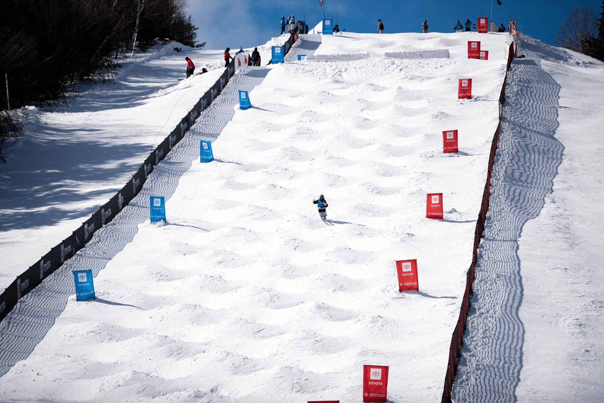
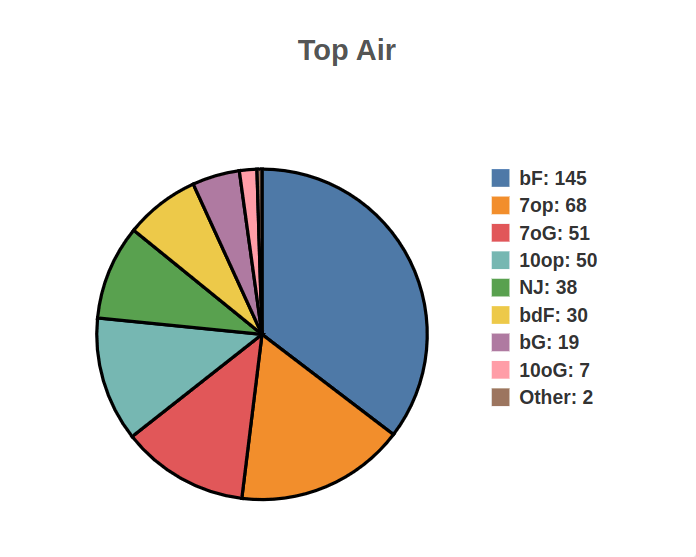
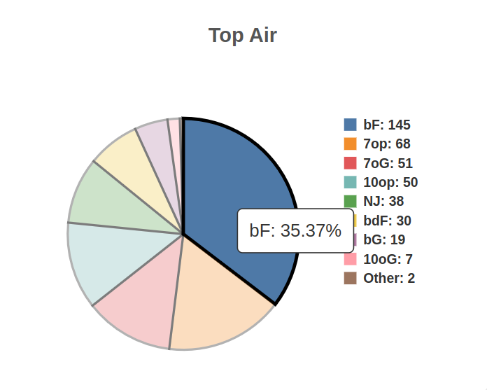
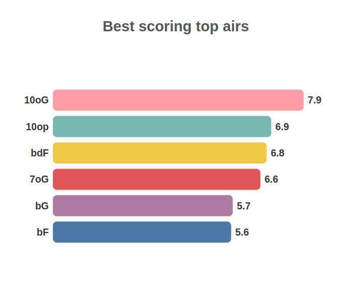
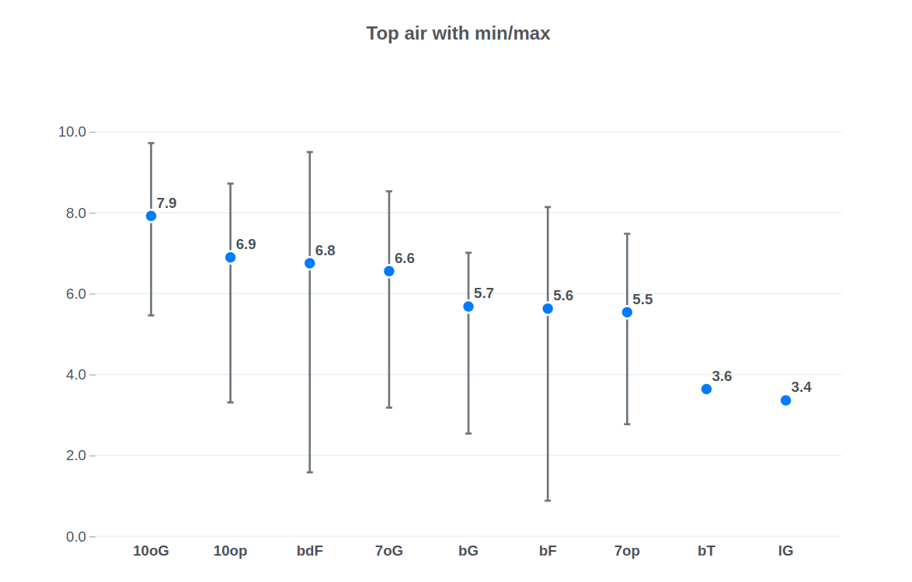

Membres de l'équipe
Julian COUX - Adame ABDELAZIZ - Tom JEANNESSON
Introduction
Nous sommes tous skieurs, dont Tom qui a été sportif de haut niveau en ski de bosses. Nous avons décidé de construire ce projet autour de cette passion commune. Tom ayant baigné dans ce sport depuis tout petit, il a pu voir les évolutions techniques utilisées par les coachs s’adapter au mieux à leurs athlètes. Les entraînements sont de plus en plus destinés à améliorer les techniques pouvant rapporter plus de points en compétition. Aujourd’hui, les entraîneurs se contentent d’analyses de tableaux Excel faits à la main avec des statistiques quasi inexistantes. L'apport d'outils d'analyse et de visualisation de données pourrait réellement faire avancer ce sport.
Présentation
Le ski de bosses est une discipline du ski freestyle ou les athlètes doivent descendre une piste couverte de petits tas de neige le plus vite possible, tout en skiant le mieux possible, et en effectuant deux sauts, l'un en haut de la piste, et l'autre en bas. Le temps représente 20% de la note, les sauts 20% (10% par saut), et la technique de ski 60%.

A l'issue de chaque course, un fichier de résultats au format PDF est
généré.
Voici un exemple de ce à quoi il ressemble. Les trois critères de
notation, à savoir la vitesse, la technique de sauts, et la technique
de ski, sont notés en
gras.

Étant donné que c'est un sport noté par des juges, une partie importante de l'entrainement consiste à analyser ses performances passées, que ce soit par analyse vidéo ou analyse de résultats, afin d'identitfier les axes d'améliorations possibles. Actuellement, la grande majorité des coachs ne faut pas d'analyse de résultats car ils ne possèdent pas d'outils adéquats. Les plus motivés d'entre eux recopient l'entièreté du tableau ci dessus dans Excel afin de faire des statistiques à la main. Cette situation est peu efficace, et mêne souvent à des conseils basés sur des "statistiques de comptoir", c'est à dire sur des ressentis, plutot que sur des données réelles.
Interface sur les sauts
Graphiques utilisés
L'interface propose six graphiques répartis en trois types distincts, chacun étant dupliqué pour représenter les sauts du haut et du bas. Un code couleur est attribué à chaque type de saut pour améliorer la lisibilité. Quatre menus déroulants permettent de filtrer les informations selon l'année, le sexe, le circuit et le statut (qualification ou classement).
Diagrame circulaire
Le premier graphique est un diagramme circulaire illustrant les types de sauts les plus utilisés. Au survol de chaque section avec la souris, une infobulle affiche le nom du saut et son pourcentage d'utilisation. La légende indique les noms des sauts ainsi que leur fréquence d'apparition. Une catégorie "autres" regroupe les types de sauts représentant moins de 1,5 % du total des occurrences. Ce graphique permet aux entraîneurs de visualiser rapidement les sauts les plus populaires, facilitant ainsi l'élaboration de stratégies, comme l'exploration de sauts moins représentés pour se démarquer et surprendre le jury.
 Diagramme en barres
Le second graphique est un diagramme en barres affichant les six sauts les mieux notés, sur une échelle de 1 à 10. Bien que cette information soit redondante avec le prochain graphique, sa présentation facilite la lecture et offre aux entraîneurs une visualisation directe des performances des meilleurs sauts.
Nuage de points
Le dernier graphique est un nuage de points illustrant l'ensemble des sauts effectués. Pour chaque saut, un point central bleu représente la moyenne, tandis qu'une barre noire indique la marge d'erreur, délimitant les performances minimales et maximales. Ce graphique complète le précédent en permettant aux entraîneurs d'évaluer la fiabilité et la difficulté de ces sauts.
Interface sur les athlètes
La page "Athlète" a été conçue pour permettre une analyse complète des performances individuelles d'un athlète au cours d'une saison spécifique. Cette page se divise en trois sections principales : Profile, Results, et Performance, chacune accompagnée de graphiques adaptés aux types de données et objectifs d'analyse. Concernant les données exploitées, nous utilisons tous les résultats des dernières saisons de cet athlètes (toutes les courses auxquelles il a participé).
Section Profile : Visualisation radar des performances globales
Objectif :
Cette section a pour but de fournir une vue d'ensemble des
performances d'un athlète selon plusieurs dimensions, comme les points
totaux, les points de temps, les points des sauts (haut et bas) et les
points de technique.
Le but est de permettre à un athlète de visualiser ses forces et ses faiblesses, par rapport aux autres athlètes. Ce qui permet de cibler son entrainement sur ses points les plus faibles.
Choix de visualisation :- Graphique radar : Ce format est idéal pour comparer plusieurs variables ayant des échelles similaires. Il met en évidence les points forts et faibles d'un athlète en un coup d'œil.
-
Chaque axe représente une métrique clé (ex. :
total_points,time_points,ski_points). - La forme polygonale obtenue montre si les performances sont équilibrées ou dominées par certaines métriques.
- La performance d’un athlète est évaluée en fonction des résultats du meilleur de la saison, offrant ainsi une analyse équitable et précise de son niveau au cours de cette période.
L’analyse des performances de Mikael KINGSBURY lors de la saison 2024 met en évidence l’efficacité de ce graphique. Elle révèle que ses points forts résident dans tous les aspects techniques, à l'exception des points liés au temps. Cela indique qu'il réalise des descentes techniquement parfaites, bien que légèrement moins rapides que ses concurrents.
En ayant connaissance de ses résultats (il est actuellement le meilleur dans sa discipline), on peut en déduire que la clé du succès réside davantage dans la maîtrise technique du ski et des sauts que dans la vitesse. Skier rapidement ne suffit pas à garantir une victoire.
Section Résultats : Historique des classements lors de la saison
Objectif :
Cette section vise à montrer l'évolution des résultats de l'athlète au
cours de la saison en mettant en lumière ses meilleures et moins
bonnes performances.
Le but est de lui donner une vue d'ensemble sur ses résultats. Cela permet, entre autre, de comparer ses résultats et voir une possible progression ou une régression au cours de la saison. Ceci est pertinent pour examiner si un athlète peut être prometteur pour les prochaines saisons ou si au contraire, ses résultats sont en baisse.
Choix de visualisation :- Graphique en ligne : Ce type de graphique est parfaitement adapté pour suivre l’évolution d’un athlète au fil de la saison. Il compare ses résultats finaux pour chaque course, permettant ainsi de visualiser rapidement les tendances de performance tout au long de la saison.
- L’axe horizontal représente les différentes compétitions, avec des étiquettes indiquant les dates et les lieux pour un repérage facile.
- L’axe vertical illustre les positions obtenues (1er, 2e, etc.), avec un affichage inversé pour placer les meilleures positions en haut, conformément aux conventions visuelles.
- Les points clés du graphique sont annotés avec les classements correspondants pour une meilleure lisibilité. De plus, en survolant un point avec la souris, des informations détaillées apparaissent, telles que le classement et le score total de l’athlète pour cette course.
Encore avec l'analyse des performances de Mikael KINGSBURY lors de la saison 2024 met en évidence son incroyable régularité. Le graphique montre clairement son évolution tout au long de la saison, avec des résultats exceptionnels, constamment dans le top 3, à l’exception d’une course où il chute à la 13ᵉ place. Cette anomalie ressort immédiatement grâce à la visualisation.
Pour l'athlète ou son coach, cette performance inhabituelle invite à une analyse approfondie. Comprendre les raisons de ce résultat (conditions météorologiques, erreurs techniques, pression, etc.) permettrait d’identifier les points d’amélioration et d’éviter qu’une telle situation ne se reproduise à l’avenir. Cela renforce l’intérêt d’un graphique qui ne se limite pas aux tendances générales, mais met également en avant les exceptions nécessitant une attention particulière.
Section Performances : Analyse avec interval min/max
Objectif :
Ce
graphique vient compléter de manière pertinente le radar présenté
précédemment en offrant une vue plus détaillée des performances de
l'athlète pour chaque catégorie de notation. Il met en avant le
classement moyen obtenu au cours de la saison pour chaque critère (par
exemple, time_points, ski_points, etc.),
tout en illustrant l’intervalle de variation, c’est-à-dire le meilleur
et le pire classement enregistré pour chaque catégorie. Cette approche
permet de visualiser à la fois la constance de l’athlète et les écarts
possibles dans ses performances.
L’objectif principal de ce graphique est d’apporter un contexte plus riche à la simple moyenne. En effet, bien qu’une moyenne puisse donner une idée générale des résultats, elle ne reflète pas les fluctuations significatives qui pourraient être critiques pour un athlète ou son entraîneur. Par exemple, un classement moyen élevé, mais accompagné d’un intervalle très large, peut indiquer une performance irrégulière. À l’inverse, une moyenne avec un intervalle restreint témoigne d’une constance dans l’effort.
En combinant ces informations, ce graphique devient un outil précieux pour analyser en détail les points forts et faibles de l'athlète dans des contextes variés. Il permet aussi d'identifier les domaines où l'amélioration est la plus nécessaire, tout en mettant en lumière les critères où il excelle de façon constante. Cette analyse fine offre une base solide pour orienter l'entraînement et maximiser les performances futures.
Choix de visualisation :- Graphique en points avec barres d'erreur : Chaque métrique est représentée par un point indiquant la moyenne des performances sur la saison.
- Les barres d’erreur montrent la variabilité (écart-type), permettant d'évaluer la régularité de l'athlète dans chaque catégorie.
Toujours avec l’analyse des performances de Mikael KINGSBURY lors de la saison 2024, on remarque que ses résultats moyens sont très proches de ses meilleurs résultats. Cela traduit une grande constance dans la plupart des catégories, ce qui est le signe d’un athlète exceptionnellement régulier. Cependant, son résultat minimal, nettement plus bas, révèle que lors de rares occasions, ses performances ont été en deçà de ses standards habituels. Ce constat est cohérent avec les observations précédentes sur ses performances globales.
Pour l’athlète ou son coach, ce graphique permet d’identifier précisément les irrégularités qui peuvent survenir dans certaines situations ou catégories spécifiques. En isolant ces moments, il devient possible d'analyser les facteurs ayant contribué à ces résultats plus faibles (erreurs techniques, conditions extérieures, pression de la compétition, etc.) et de mettre en place des stratégies ciblées pour les éviter à l’avenir.
Etude sociétale
L'analyse des données sur le nombre d'athlètes par pays et la
répartition hommes/femmes à l'échelle mondiale révèle certains aspects
intéressants d'un point de vue sociétal. On observe que le nombre
total d'athlètes varie grandement selon les pays, certains ayant une
présence beaucoup plus importante que d'autres dans ce domaine. Cela
peut s'expliquer par des facteurs tels que la taille de la population,
les investissements et l'intérêt pour le sport dans chaque pays. De
plus, la répartition homme/femme montre que les femmes représentent
41,4% des athlètes au niveau mondial. Bien que cette proportion ne
soit pas encore à parité, elle indique une participation féminine non
négligeable dans le sport de haut niveau. Cependant, des disparités
persistent entre les pays et les disciplines, témoignant de défis
persistants en matière d'égalité des genres dans le monde sportif.
Une analyse plus approfondie de ces différences pourrait permettre
d'identifier les obstacles et les leviers pour favoriser une meilleure
représentation des femmes dans le sport de compétition. Cette étude
sociétale, combinée à l'analyse des performances techniques, offre une
vision plus complète du paysage sportif mondial et de ses enjeux
sociaux et de développement.
Choix des graphiques et apports
Les visualisations sélectionnées, à savoir la carte mondiale du nombre d'athlètes par pays et le graphique circulaire de la répartition hommes/femmes, permettent de mettre en lumière différents aspects sociétaux de ces données sportives. La carte géographique offre une représentation spatiale des disparités entre les pays, facilitant l'identification des zones où la pratique est plus ou moins développée. Cela peut orienter des réflexions sur les facteurs socio-économiques, culturels ou politiques qui influencent la participation dans certaines régions. Le diagramme circulaire, quant à lui, fournit un aperçu clair de la représentation des genres dans le sport de haut niveau. Ce type de visualisation permet de saisir rapidement les écarts entre hommes et femmes, et d'amorcer des questionnements sur les obstacles à une participation plus équilibrée. Ensemble, ces graphiques apportent un éclairage complémentaire sur les dynamiques sociétales qui se jouent dans le monde sportif, ouvrant la voie à des analyses plus approfondies et à la mise en place d'initiatives visant à favoriser une plus grande inclusivité.